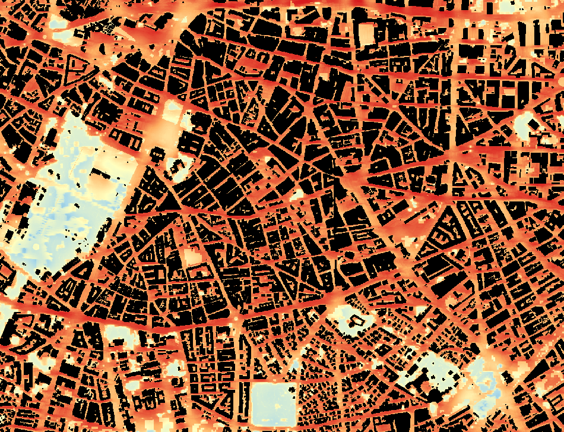

Thermal Comfort Maps
Picture: zoom-in on a 2 m UTCI map — hot streets in red, shaded courtyards and greenery cool.
Thermal Comfort Maps translate weather into what people actually feel on the street. Using the physics-based SOLWEIG model, we combine radiation, wind and the shade of buildings and trees at 2 metre resolution to calculate human thermal comfort for an entire city.
Results come in the heat-stress metric that fits your question — UTCI for outdoor thermal comfort, or WBGT for occupational and health-related heat risk — for typical and extreme days, today and under future climate scenarios, with the urban heat island effect included. Maps can be aggregated to hexagons or neighbourhoods for city-wide screening, or kept at full 2 m detail to evaluate individual streets, squares and design interventions.
Strengths & innovation
- Very high resolution2-metre resolution captures hyperlocal variation — building shadows, tree canopies.
- Physics-basedUses physical modelling (the SOLWEIG model), not statistical inference — a scarce capability in the market.
- Wind effectsAccounts for wind sheltering and channelling by buildings and vegetation.
- Urban Heat IslandThe urban heat island effect is included, so results reflect the real microclimate of the city rather than a rural weather station.
- Future scenariosTypical and extreme days for the present climate and for future climate scenarios, to design for the heat a place will actually face.
“Local feels-like temperatures can differ by many degrees across a single square — knowing where the hot spots are is what makes a redesign genuinely resilient.”
Demo
Real 2 m results for the typical present-day climate, averaged over the 24 h of a typical day: mean UTCI for Casablanca and mean WBGT for Warangal. Switch between the hexagon mean and the full 2 m resolution, and zoom in to see individual streets.
Loading demo data…
Request a study
High-resolution GPU runs are too costly to offer as a free demo, so every Thermal Comfort study is scoped to your project. Tell us where and what you need — we come back with a proposal.
- ScopeShare your area, the question (UTCI or WBGT) and the scenarios of interest.
- ModelWe run SOLWEIG at 2 m for your site, on typical and extreme days.
- DeliverMaps, hexagon statistics and a short report you can use in design and policy.